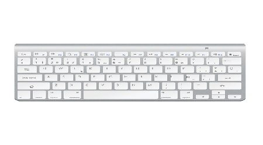

Tipos
Podemos dividirlos en 2:
Según su forma:
Teclado ergonómico
Teclado flexible
Teclado en pantalla
Teclados de proyección
Teclados de membrana
Teclados capacitivos
Teclados mecánicos

Según su conexión:
Teclado con conector Paralelo

Teclado con conector DIN o PS/2
Teclado con conector USB
Teclado inalámbrico
Ir al inicio